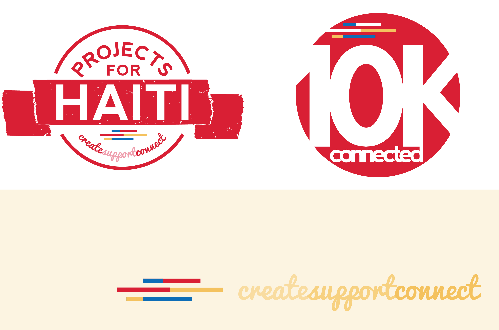

Designs & Illustrations
For the past year and a half, I've fallen head over heels in love with graphic design.
Below are a few of my projects.

Benjamin Jacob Rupe | 2012-Present
Since his Kickstarter campaign in the fall of 2012, I have worked closely with Benjamin Jacob Rupe and his team on visual branding.
The pieces sampled above include his Kickstarter promotional flier, Christmas tour 2012 flier, cover art for EP album and album release party flier.
Projects for Haiti | 2013-Present
As a marketing and communications intern with Gainesville nonprofit Projects for Haiti, I have visually rebranded the organization.
The pieces sampled above include the updated logo for the organization as well as logo for Projects for Haiti's 10K Connected campaign. I was also responsible for restoring the visual appearance of all P4H social media. Above is the new Facebook cover photo.